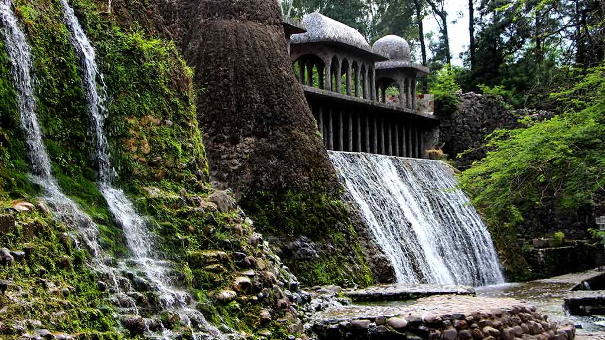

nek chand rock garden
Chandigarh - India
Welcome to the magical land of Nek Chand Rock Garden located in Chandigarh, India with never-ending imagination. The ordinary green space known as this magical garden bears witness of the extraordinary creative mind behind Nek Chand.
How about a garden fashioned out of broken glass, tiles, and used kitchen utensils? And that’s the Nek Chand Rock Garden. Nek Chand began to create a “whimsical wonderland” in 1957 as an ordinary transport worker. It was made of any waste material into artwork.
Why did I select this location? Nek Chand Rock Garden is definitely a passion and creative symbol. It is not all aesthetic though; rather, to change the ordinary into the remarkable. Every area of this garden story made out of junks has more than enough surprises.
Nek Chand Rock Garden was created as an illustration that one can achieve a lot with sheer determination and creative skills. Nek Chand used garbage and converted them into works of art. A garden full of wonderful sculptures and other beautiful man-made structures that celebrate what could be found aesthetically pleasing about ordinary things we tend to ignore every day.
This is why Nek Chand Rock Garden has a deeper meaning behind it. Instead, it compels us to reconsider our view of the world and appreciate what beauty is held within unlikely places. It reminds us that art may rise out of sheer simplicity, and each creation tells a tale about metamorphosis and innovation.
Therefore, if by chance, you will be visiting Chandigarh, walk into the wonderland of Nek Chand Rock Garden. It is not only a garden but a living proof of what happens if passion and creativity come together.